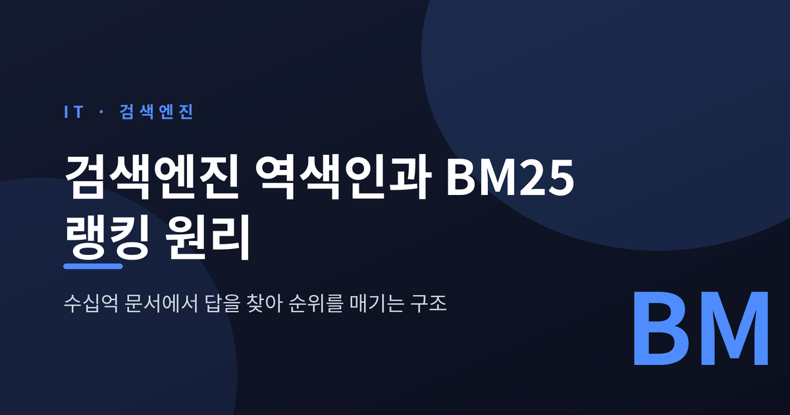
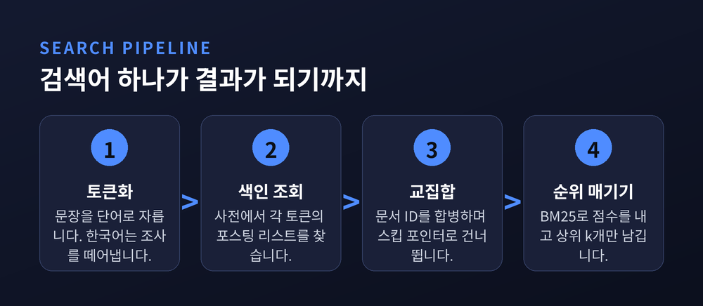
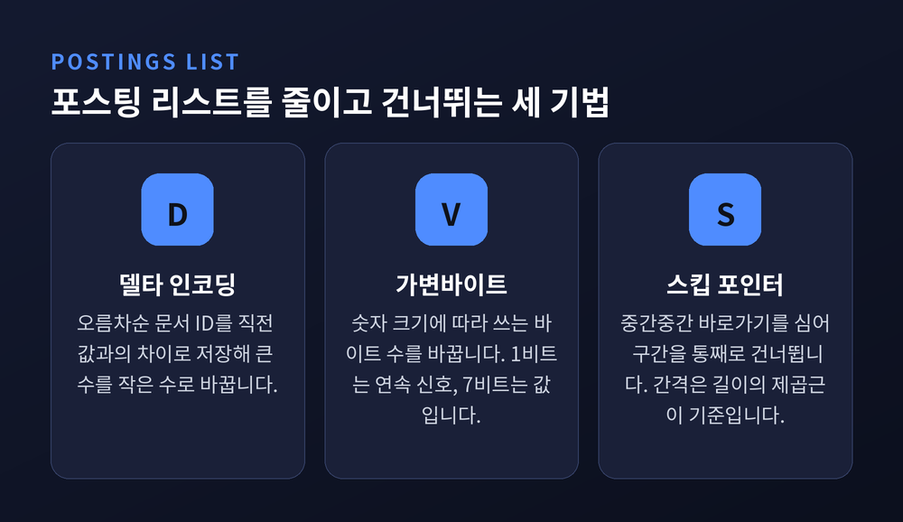
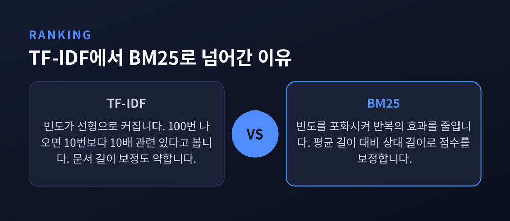
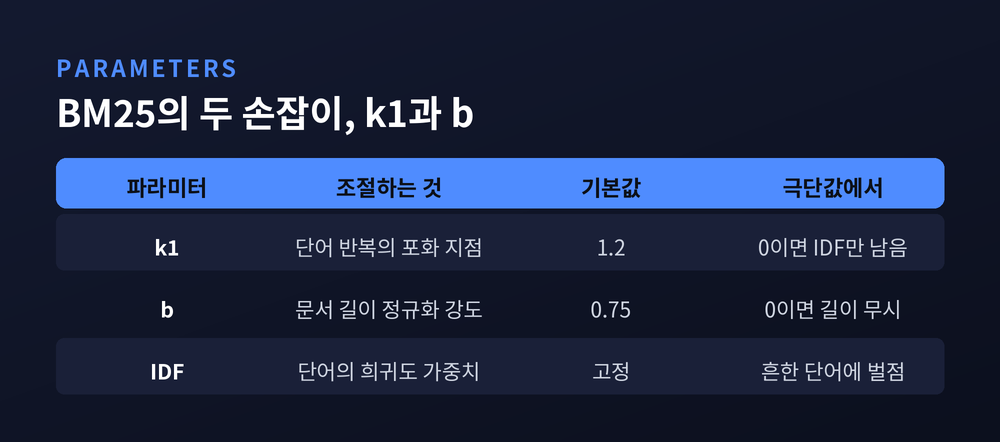
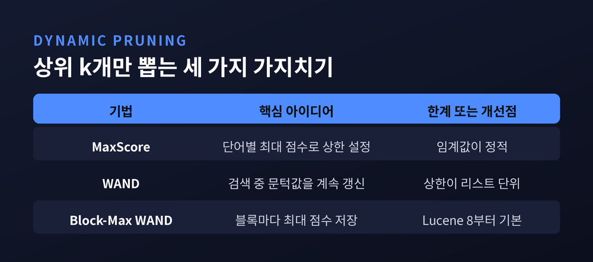
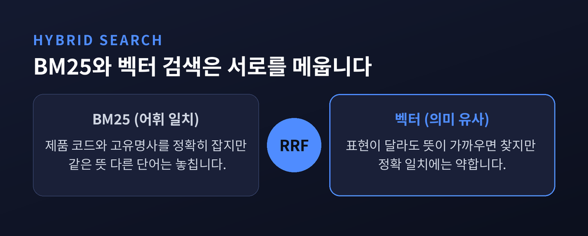

이번 글에서는 검색엔진이 수십억 개의 문서 가운데 답이 될 만한 것을 골라내고, 그중 무엇을 위에 놓을지 정하는 구조를 정리해 보겠습니다. 뼈대는 두 가지입니다. 문서를 뒤집어 저장하는 역색인(inverted index), 그리고 순위를 매기는 BM25 랭킹 함수입니다. 수식이 나오지만 기호는 모두 말로 풀어 설명하겠습니다.
가장 단순한 검색은 모든 문서를 처음부터 끝까지 읽으며 질의어가 있는지 확인하는 것입니다. 파일 몇 개라면 이 방식으로 충분합니다. 스탠퍼드 정보검색 교재도 셰익스피어 전집 정도의 작은 컬렉션은 선형 스캔으로 처리할 수 있다고 말합니다.
문제는 규모가 커질 때 세 가지가 동시에 필요해진다는 점입니다.
첫째, 대규모 문서 집합을 빠르게 처리해야 합니다. 둘째, AND나 NOT 같은 연산을 유연하게 조합할 수 있어야 합니다. 셋째, 결과가 그냥 목록이 아니라 순위가 매겨진 목록이어야 합니다.
세 번째가 특히 까다롭습니다. 조건에 맞는 문서가 천만 건이라면, 천만 건을 다 보여주는 것은 아무것도 보여주지 않는 것과 같습니다.
그래서 검색엔진은 발상을 뒤집습니다. 질의가 들어온 다음에 훑는 대신, 미리 훑어서 뒤집어 저장해 둡니다.
문서는 본래 문서 → 그 안의 단어들 방향으로 되어 있습니다. 이 방향을 단어 → 그 단어가 든 문서들로 뒤집은 것이 역색인입니다. 이름의 '역(inverted)'이 바로 이 뒤집기를 가리킵니다.
역색인은 두 부분으로 나뉩니다.
하나는 사전(term dictionary)입니다. 정렬된 용어 목록이고, 각 용어마다 그 용어를 담은 문서 수와 포스팅 리스트의 위치가 붙어 있습니다.
다른 하나는 포스팅 리스트(postings list)입니다. 해당 용어가 등장한 문서 ID의 목록이며, 등장 횟수와 위치 정보도 함께 담깁니다.
Lucene 같은 실제 엔진도 이 이분 구조를 그대로 씁니다. 용어 사전은 FST(Finite State Transducer)라는 압축 자료구조로 접두사와 접미사를 공유해 저장하고, 포스팅은 별도 파일에 블록 단위로 놓습니다.

역색인을 만들려면 먼저 텍스트를 토큰으로 잘라야 합니다. 이 과정이 토큰화이고, 이어서 대소문자 통일·불용어 제거·어간 추출 같은 정규화가 붙습니다.
여기서 반드시 지켜야 할 원칙이 하나 있습니다. 색인할 때와 검색할 때 같은 분석기를 써야 한다는 것입니다. 규칙이 어긋나면 같은 단어가 서로 다른 토큰이 되어 영영 만나지 못합니다.
영어는 공백만으로도 어느 정도 해결됩니다. "shane connelly"는 공백 기준으로 두 토큰이 되고, 각 토큰이 따로 점수 계산에 들어갑니다.
한국어는 사정이 다릅니다. 조사와 어미가 붙는 교착어라서 "검색엔진은", "검색엔진이", "검색엔진을"이 전부 다른 문자열입니다. 띄어쓰기만 믿으면 같은 단어를 세 개로 나눠 쌓게 됩니다.
그래서 형태소 분석기가 들어갑니다. Elasticsearch가 공식 지원하는 한국어 분석기는 Nori입니다. nori_tokenizer가 사전 정보를 이용해 어근을 잘라내고, nori_part_of_speech 필터가 조사나 어미 같은 품사를 색인에서 걸러냅니다. 합성어를 어떻게 다룰지는 decompound_mode로 정합니다. 기본값인 discard는 합성어를 분리해 어근만 저장하고, mixed는 어근과 합성어를 모두 남깁니다.
흔한 단어의 포스팅 리스트는 길이가 수억에 이릅니다. 이걸 그대로 두면 디스크도 버겁고 읽는 시간도 버겁습니다. 두 갈래의 처방이 있습니다.
첫째, 압축입니다.
포스팅 리스트의 문서 ID는 구조상 오름차순입니다. 그러니 절댓값 대신 직전 값과의 차이만 저장하면 됩니다. 이것이 델타(d-gap) 인코딩입니다. [1024, 1030, 1051, 1052]는 [1024, 6, 21, 1]이 됩니다. 앞의 하나만 크고 나머지는 작은 수로 바뀝니다.
작아진 수에는 작은 그릇을 씁니다. 가변바이트(variable byte) 인코딩은 숫자 크기에 따라 쓰는 바이트 수를 바꿉니다. 각 바이트의 1비트를 "뒤에 바이트가 더 있다"는 신호로 쓰고, 나머지 7비트에 값을 담습니다. 스탠퍼드 교재는 감마 코드처럼 비트 단위로 더 촘촘히 압축하는 방법도 함께 소개하지만, 대부분의 검색 시스템에서는 가변바이트가 시간과 공간의 절충이 가장 낫고 구현도 단순하다고 평가합니다.
둘째, 건너뛰기입니다.
AND 질의는 결국 두 포스팅 리스트의 교집합을 구하는 일입니다. 둘 다 정렬돼 있으니 포인터 두 개를 앞으로 밀며 합치면 됩니다. 두 리스트 길이가 x, y일 때 대략 x+y번의 비교로 끝납니다.
더 줄일 수 있습니다. 리스트 중간중간에 스킵 포인터를 심어 "여기서 한참 앞으로 뛸 수 있다"고 표시해 둡니다. 뛴 지점의 문서 ID가 여전히 상대편 현재 값보다 작다면, 그 사이 구간은 읽지 않고 통과합니다.
간격은 어떻게 잡을까요. 교재가 제시하는 실무 휴리스틱은 길이 P인 리스트에 √P개를 균등 배치하는 것입니다. 다만 교재는 한계도 함께 적어 두었습니다. 이 방법은 질의어의 분포를 전혀 고려하지 않고, 포인터 저장과 비교에도 비용이 들기 때문에 잘못 배치하면 이득이 상쇄됩니다.

여기까지가 "찾기"입니다. 이제 "줄 세우기"로 넘어갑니다.
오래된 표준은 TF-IDF였습니다. 두 신호를 곱합니다.
TF(단어 빈도) 는 그 단어가 문서 안에 몇 번 나왔는지를 봅니다. 많이 나올수록 관련이 깊다고 봅니다.
IDF(역문서빈도) 는 그 단어가 전체 컬렉션에서 얼마나 드문지를 봅니다. 흔한 단어일수록 변별력이 없으니 가중치를 깎습니다. Elastic의 설명대로 IDF는 "흔한 단어에 벌점을 주는" 항입니다. 네 개 문서 전부에 나오는 단어보다 두 개에만 나오는 단어가 더 큰 값을 받고, 최종 점수에 더 많이 기여합니다.
발상은 지금도 유효합니다. 문제는 TF 쪽에 있었습니다.
첫 번째 약점은 빈도가 선형으로 커진다는 점입니다. 같은 단어가 100번 나온 문서를 10번 나온 문서보다 정확히 10배 관련 있다고 판정합니다. 현실은 그렇지 않습니다. 대여섯 번쯤 나오면 "이 문서는 그 주제다"라는 신호는 이미 충분합니다. 그 뒤로는 반복일 뿐입니다.
두 번째 약점은 문서 길이 보정이 약하다는 점입니다. 길고 장황한 문서는 우연만으로도 빈도가 올라갑니다. 짧고 정확한 문서가 긴 문서에 밀립니다.
BM25는 바로 이 두 지점을 고칩니다.

BM25의 BM은 Best Matching의 줄임말입니다. 1970~80년대 Stephen Robertson과 Karen Spärck Jones 등이 세운 확률적 검색 프레임워크에서 나왔습니다. 앞에 붙는 Okapi는 이 함수를 처음 구현한 시스템 이름입니다. 런던 시티대학교에서 1980~90년대에 만들었습니다.
수식은 이렇습니다. 질의에 들어 있는 각 단어마다 아래 값을 구해서 전부 더합니다.
점수 = Σ IDF(단어) × 빈도 × (k1 + 1)
─────────────────────────────────────
빈도 + k1 × (1 − b + b × 문서길이/평균길이)
기호를 하나씩 말로 풀겠습니다.
k1이 하는 일 — 반복을 포화시킵니다.
Elastic의 표현을 빌리면 k1은 "하나의 질의어가 문서 점수에 얼마나 영향을 줄 수 있는지 상한을 거는" 값입니다. 점수가 점근선에 다가가듯 올라가다 멈춥니다. 해석 하나를 덧붙이면, 평균 길이의 문서에서 k1은 그 단어가 낼 수 있는 최대 점수의 절반을 주는 빈도 값입니다. 빈도가 k1보다 작은 구간에서는 점수가 빠르게 오르고, k1을 넘어서면 점점 완만해집니다.
Elastic이 실제 인덱스로 확인한 수치가 있습니다. b를 0으로 두고 k1을 10으로 크게 잡으면, "shane"이 한 번 나온 문서는 0.074107975점, 두 번은 0.13586462점, 세 번은 0.18812023점을 받습니다. 증가분만 떼어 보면 0.0741 → 0.0618 → 0.0523으로 줄어듭니다. 겉보기엔 선형에 가깝지만 분명히 체감이 감소합니다. 같은 조건에서 k1을 0.01로 낮추면 증가분이 0.0741 → 0.000369 → 0.000124로 급격히 꺼집니다. 반복을 거의 인정하지 않는 설정입니다.
반대로 k1을 0으로 두면 빈도 항이 통째로 상쇄되어 IDF만 남습니다. 이때는 "Shane", "Shane C", "Shane Connelly" 같은 문서가 전부 같은 점수를 받습니다.
b가 하는 일 — 긴 문서에 제동을 겁니다.
분모의 문서길이/평균길이 항이 "이 문서가 평균보다 긴가 짧은가"를 나타냅니다. 평균보다 길면 분모가 커져 점수가 내려가고, 짧으면 분모가 작아져 점수가 올라갑니다.
b는 이 효과의 증폭기입니다. b를 0으로 두면 길이 항이 사라져서 문서 길이가 점수에 아무 영향을 주지 않습니다. b를 1로 두면 길이 보정이 최대로 걸립니다. 실제로 k1=5, b=1로 둔 실험에서는 "매칭 단어 수 / 전체 단어 수" 비율이 순위를 지배했습니다. 단어 하나짜리 문서 "Shane"이 0.166점으로 1위, 두 단어 중 하나가 맞는 문서들이 0.102점, 세 단어 중 하나가 맞는 문서가 0.074점이었습니다.
직관은 단순합니다. 300쪽짜리 책에 제 이름이 한 번 나온 것보다, 짧은 글에 한 번 나온 것이 저와 더 관련 있을 확률이 높습니다.
참고로 b가 1이면 BM11, 0이면 BM15라는 별도 이름이 붙습니다.
기본값은 k1 = 1.2, b = 0.75입니다.
Lucene의 BM25Similarity 공식 문서, Elastic 공식 블로그, 그리고 표준적인 BM25 서술이 모두 이 값을 가리킵니다. Elasticsearch와 OpenSearch도 같은 기본값을 씁니다. k1은 보통 1.2에서 2.0 사이에서 조정하고, b = 0.75는 여러 종류의 문서 집합에서 무난히 동작하는 균형점으로 평가됩니다.

BM25에도 약점은 있습니다. 표준 BM25는 문서 길이에 의한 빈도 정규화에 하한이 없습니다. 그래서 질의어를 실제로 담고 있는 아주 긴 문서가, 질의어를 아예 담지 않은 짧은 문서와 비슷한 점수를 받는 일이 생깁니다. 이 결함을 보정하려고 파라미터 하나를 더한 BM25+가 제안되었습니다. 문서를 제목·본문·앵커 텍스트처럼 여러 필드로 나눠 필드마다 가중치를 다르게 주는 BM25F도 같은 계열의 확장입니다.
질의어에 흔한 단어가 끼면 후보 문서가 수백만 건으로 불어납니다. 그런데 사용자에게 보여줄 것은 대개 열 개입니다. 나머지의 점수는 계산할 이유가 없습니다.
여기서 동적 가지치기(dynamic pruning) 가 등장합니다.
MaxScore는 상한을 이용한 초기 기법입니다. 각 단어가 낼 수 있는 최대 점수를 미리 알아 두고, 남은 단어를 전부 더해도 현재 상위 k의 문턱값을 넘길 수 없는 문서는 건너뜁니다.
WAND(Weak AND) 는 2003년 Broder 등이 제안했습니다. 빠른 응답이 서비스 그 자체인 대규모 웹 검색을 겨냥한 알고리즘이며, 문턱값을 검색 도중에 계속 갱신하는 동적 임계값으로 MaxScore보다 효율을 끌어올렸습니다.
Block-Max WAND는 2011년 Ding과 Suel이 내놓은 개선판입니다. 포스팅 리스트를 블록으로 자르고 블록마다 최대 점수를 따로 저장합니다. 블록 단위 상한은 전체 리스트의 상한보다 자연히 더 촘촘합니다. 덕분에 훨씬 많은 후보를 통째로 건너뛸 수 있습니다.
효과는 수치로 확인됩니다. Lucene은 8버전(2019년 3월)부터 블록맥스 인덱스와 block-max WAND를 도입했습니다. Lucene 자체 벤치마크 기준으로 term 질의는 3배에서 7배, AND 질의는 3%에서 7배 빨라졌습니다. OR 질의는 편차가 커서 8% 느려진 경우부터 15배 빨라진 경우까지 나왔습니다. 수집기가 질의에 "최소 경쟁 점수"를 알려 주는 최적화를 더하면 OR 질의가 40%에서 13배까지 개선됩니다.
전제 조건은 분명합니다. 전체 매칭 건수를 정확히 알 필요가 없을 때만 가지치기가 가능합니다. "약 1,200만 건"이라는 숫자를 정확히 세려면 결국 다 훑어야 하니까요.

BM25는 bag-of-words 모델입니다. 단어가 문서 안에서 서로 얼마나 가까이 놓였는지는 보지 않고, 나왔는지와 몇 번 나왔는지만 봅니다. 그리고 근본적으로 어휘 일치 방식입니다. 질의어와 문서의 토큰이 겹쳐야 점수가 납니다.
한계가 여기서 나옵니다. "자동차 고장"으로 검색하면 "차량 결함"이라고 쓴 문서를 놓칩니다. 뜻은 같아도 글자가 다르기 때문입니다.
임베딩 기반 벡터 검색은 이 지점을 메웁니다. 뜻이 비슷하면 벡터 공간에서 가까워지니, 단어가 달라도 찾아냅니다.
그렇다면 BM25는 은퇴해야 할까요. 근거를 보면 그렇지 않습니다.
2021년 공개된 BEIR 벤치마크는 18개의 서로 다른 데이터셋에서 검색 모델의 제로샷 성능을 비교했습니다. 결론은 BM25가 놀랄 만큼 견고한 기준선이라는 것이었습니다. 학습에 쓴 도메인 안에서는 신경망 모델이 BM25를 7~18점 앞섭니다. 그러나 도메인이 달라지면 사정이 뒤집힙니다. 학습 데이터와 평가 데이터의 도메인이 많이 겹칠 때만 dense 모델이 우위를 보였고, 도메인 전이가 큰 데이터셋에서는 BM25보다 한참 나빴습니다. BEIR의 절반 이상에서 BM25를 이긴 것은 재순위 모델과 ColBERT 같은 late-interaction 계열뿐이었고, 그마저도 계산 비용이 훨씬 컸습니다.
실무적인 이유도 있습니다. 제품 코드, 에러 코드, 사람 이름, 드문 전문용어 — 이런 것들은 정확히 그 글자로 찾아야 합니다. 벡터 검색은 이 정확 일치에 약합니다. 두 방식의 강점이 정확히 어긋나 있습니다.
그래서 요즘 표준이 된 답은 하이브리드 검색입니다. BM25 결과와 벡터 결과를 함께 뽑아 합칩니다. 합치는 방법으로 널리 쓰이는 것이 RRF(Reciprocal Rank Fusion) 입니다. 점수를 더하지 않고 각 목록에서의 등수만 씁니다. BM25 점수와 코사인 유사도는 애초에 단위가 달라 직접 더할 수 없는데, 순위만 쓰면 이 문제가 사라집니다. Elasticsearch의 rrf retriever를 비롯해 OpenSearch, Weaviate, Qdrant, Azure AI Search가 모두 내부에서 이 방식을 씁니다.
예전엔 키워드 검색과 의미 검색이 서로를 대체할 후보로 놓였습니다. 지금은 한 파이프라인 안에서 나란히 돌아갑니다.

정리하면 이렇습니다.
검색엔진은 세 번 걸러 냅니다. 역색인으로 후보를 좁히고, 스킵 포인터와 압축으로 읽을 양을 줄이고, BM25로 순위를 매긴 다음 WAND 계열 가지치기로 상위 몇 개만 남깁니다. 어느 한 단계도 마법이 아닙니다. 전부 "계산하지 않아도 되는 것을 계산하지 않는" 절약의 기술입니다.
BM25는 1980년대에 나온 함수입니다. 40년이 지났고, 그사이 검색은 두 번쯤 세대가 바뀌었습니다. 그런데도 아직 기준선 자리를 지킵니다.
"오래된 것이 살아남는 이유는 낡지 않아서가 아니라, 다른 것이 못 하는 일을 하기 때문입니다."
검색의 다음 세대가 무엇이 되든 BM25는 어딘가 한 층에 남아 있을 것 같습니다. 정확히 그 단어를 찾아야 하는 순간은 사라지지 않으니까요.